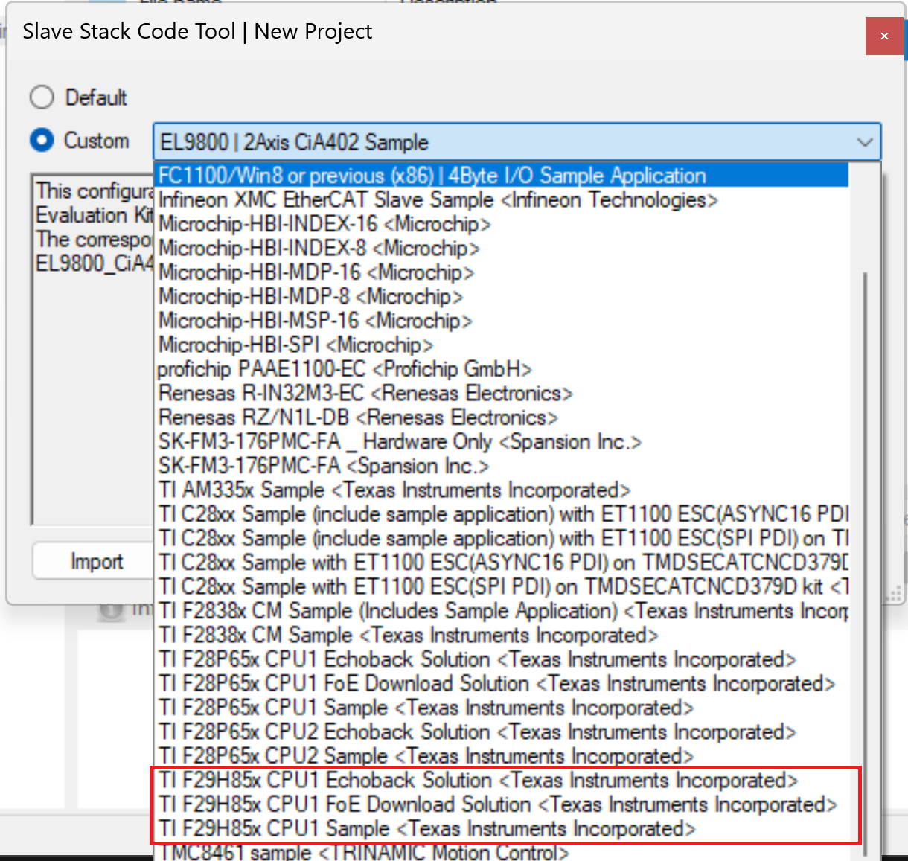
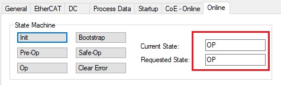
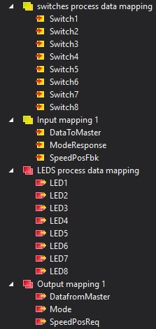
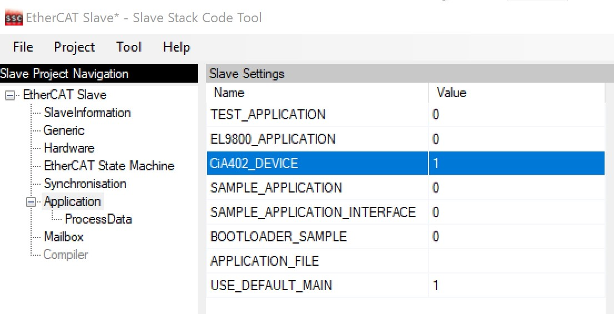
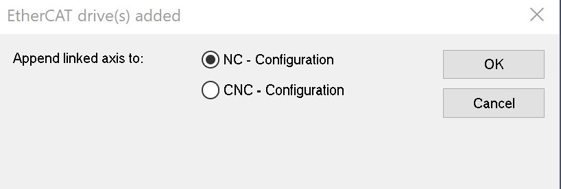

This chapter details how to get setup and begin using the EtherCAT examples. These instructions use Beckhoff’s TwinCAT as the EtherCAT MainDevice. The EtherCAT software includes the following:
CPU1 PDI HAL Test Example
- This example sets up EtherCAT to be allocated to CPU1 and configures the required EtherCAT GPIOs and clocking. Additionally, the example performs a series of reads and writes to the full range of EtherCAT RAM using the HAL APIs. These can be observed from the CCS memory browser or TwinCAT ESC memory browser.
- This example is self-checking when performing the reads and writes. The following details the pass and fail signals:
- Pass Signal - Both controlCARD LEDs (D1,D2) are on (not flashing)
- Fail Signal - Both controlCARD LEDs (D1,D2) are flashing
- Note
- The intent of this project is to demonstrate the usage of the PDI. Therefore, no EtherCAT stack is included in this demo.
- First, TwinCAT must be installed and setup. Refer Setup TwinCAT
- Check your external connections.
- Open CCS and import the example f29h85x_cpu1_pdi_hal_test_app
- Select the RAM build configuration and build the example
- Load the example to the controlCARD and run the application
- Note
- Important: If another EtherCAT example was loaded previously and the controlCARD hasn’t been power cycled since, make sure to power cycle the controlCARD before running this example
- If this your first time running any EtherCAT code on the controlCARD, the LEDs should be indicating a fail signal.
- This failure is occurring because the minimum required EtherCAT EEPROM locations aren’t programmed yet.
- Refer Program ControlCard EEPROM on how to program the EEPROM
- Once EEPROM is programmed or re-programmed for the correct core, reset the CPU and restart the example.
- Set a breakpoint on ESC_debugUpdateESCRegLogs() in pdi_test_app.c and the CPU should hit the breakpoint. The pass signal should be indicated by the controlCARD LEDs. If not, pause the execution and investigate further.
- The ESC_debugUpdateESCRegLogs() will continually update the ESC_escRegs data structure with the EtherCAT register and RAM values added for monitoring as part of ESC_setupPDITestInterface(). This data structure can be viewed using the CCS Expressions window.
- You can now restart the example and set various breakpoints within ESC_setupPDITestInterface() to observe the reads/writes from CCS as well as the TwinCAT MainDevice memory window. Additionally, you can change values via either interface to introduce failures in the PDI test. Refer Use TwinCAT Memory Window for information on using the TwinCAT MainDevice memory window.
CPU1 Echoback Solution Example
- This example requires application and SubordinateDevice stack files to be generated via the SSC tool before building/running.
- This example emulates a bank of switches (inputs) and LEDs (outputs). The EtherCAT MainDevice controls the LEDs' states and the EtherCAT SubordinateDevice loops back the virtual LED signals into the virtual switches so that the MainDevice can read back the LED output state.
Steps to Run the Example
- First, TwinCAT must be installed and setup. Refer to Setup TwinCAT.
- Install the SSC tool V5.13
- Important: Only V5.13 is supported. Only download this version.
- Download at ETG SSC ET9300
- Check your external connections: (Example External Connections)
- Run
ethercat_subdevice_ssc_and_demo_setup.exe installer to extract the F29H85x SSC configuration and echoback application files required by the SSC tool. These will be located in the newly created ssc_configuration directory.
- Open the SSC tool and a New Project dialog box will open. Select Import and locate the
f29x_ssc_config.xml. Then click Open.
Use the Custom drop-down menu to select TI F29H85x CPU1 Echoback Solution and click OK.
 SSC Configuration Window - Click Yes when the pop up window asks about requiring external files to proceed.
- Save the SSC project.
- Within SSC tool, go to Project -> Create new SubordinateDevice Files
- Change the Source Folder directory to the
~/examples/f29h85x_cpu1_echoback_solution directory.
- Leave the ESI file directory location as is.
- Click Start and then OK.
- Import the example from
~/examples/f29h85x_cpu1_echoback_solution into CCS and build it for RAM.
- Within CCS, verify to be in the CCS Debug view and connect to CPU1.
- Once connected to CPU1, go to Run -> Load -> Load Program and select
f29h85x_cpu1_echoback_solution.out. Then click Resume.
- Copy the ESI file (
F29H85x CPU1 EtherCAT SubDevice.xml) generated by the SSC tool into the TwinCAT directory (Default location: C:/TwinCAT/3.1/Config/Io/EtherCAT) If the TwinCAT application is already opened, it must first be closed and re-opened for the ESI file to be discovered.
- Refer to Program ControlCard EEPROM on how to program the EEPROM.
- Once EEPROM is programmed, do the following:
Within TwinCAT, double-click on the discovered EtherCAT box and observe that the EtherCAT SubordinateDevice is running in OP mode.
 EtherCAT SubordinateDevice in OP Mode Within TwinCAT, expand the explorer to the EtherCAT box and find the various output/input mappings.
 TwinCAT Solution Explorer Inputs and Outputs - Select the LEDS process data mapping in the solution explorer and in the window on the right, you can change the value of any of the virtual LEDs. Switch to the switches process data mapping to see the looped back values. For example, if LED1 is set to 1, then Switch1 should also be 1.
- Select the Output mapping 1 in the solution explorer and in the window on the right, you can change the values of the 3 data variables. Once set, the looped back value can be observed from the Input mapping 1 variables.
CPU1 CiA402 Solution Example
This example requires application and subdevice stack files to be generated via the SSC tool before building/running. This example integrates the sample CiA402 application from Beckhoff.
Steps to Run the Example
- First, TwinCAT must be installed and setup. Refer to Setup TwinCAT.
- Install the SSC tool V5.13
- Important: Only V5.13 is supported. Only download this version.
- Download at ETG SSC ET9300
- Check your external connections: (Example External Connections)
- Run
ethercat_subdevice_ssc_and_demo_setup.exe installer to extract the F29H85x SSC configuration and echoback application files required by the SSC tool. These will be located in the newly created ssc_configuration directory.
- Open the SSC tool and a New Project dialog box will open. Select Import and locate the
f29h85x_ssc_config.xml. Then click Open.
Use the Custom drop-down menu to select TI F29H85x CPU1 Sample (the one WITHOUT the sample application) and click OK.
SSC Configuration Window - Click Yes when the pop up window asks about requiring external files to proceed.
In the subdevice Project Navigation, select Application and for the CiA402_DEVICE subdevice setting, set the value to 1.
 SSC Application Window - Save the SSC project.
- Within SSC tool, go to Project -> Create new subdevice Files
- Change the Source Folder directory to the
~/examples/f29h85x_cpu1_cia402_solution directory.
- Leave the ESI file directory location as is.
- Click Start and then OK.
- Import the example from
~/examples/f29h85x_cpu1_cia402_solution into CCS and build it for RAM
- Within CCS, verify to be in the CCS Debug view and connect to the CPU1 core.
- Once connected to the CPU1 core, go to Run -> Load -> Load Program and select
f29h85x_cpu1_cia402_solution.out. Then click Resume.
- Copy the ESI file (
F29H85x CPU1 EtherCAT subdevice.xml) generated by the SSC tool into the TwinCAT directory (Default location: C:/TwinCAT/3.1/Config/Io/EtherCAT) If the TwinCAT application is already opened, it must first be closed and re-opened for the ESI file to be discovered.
- Refer to Program ControlCard EEPROM on how to program the EEPROM (can follow the echoback example steps).
Once EEPROM is programmed, do the following:
- Disconnect and power cycle the board
- Reload CPU1 application and press Resume in the CCS debug perspective to start running the code.
- Reconnect to board to TwinCAT and rescan for devices
Twincat Restart in Config Mode With the ESI indicating CiA402 support, TwinCAT will ask about how to append the linked axis. Select whichever makes sense for your axis.
 TwinCAT Drives Configuration Within TwinCAT, double-click on the discovered EtherCAT box and observe that the EtherCAT subdevice is running in OP mode.
EtherCAT SubordinateDevice in OP Mode - For further details on configuring and running this example as well as details on the CiA402 drive profile objects refer to Chapter 10 in the following Beckhoff document: Application Note ET9300 (EtherCAT subdevice Stack Code)
- Any questions regarding the CiA402 sample implementation, post on the ETG developer forums: Link
CPU1 FoE Download Solution Example
This example requires application and subdevice stack files to be generated via the SSC tool before building/running. This example emulates a transfer of data from the Master to the subdevice using FoE Protocol. Dummy data is sent from the master using TwinCAT, which is received by the subdevice and can be read from the memory using Code Composer Studio.
Steps to Run the Example
- First, TwinCAT must be installed and setup. Refer to Setup TwinCAT.
- Install the SSC tool V5.13
- Important: Only V5.13 is supported. Only download this version.
- Download at ETG SSC ET9300
- Check your external connections: (Example External Connections)
- Run
ethercat_subdevice_ssc_and_demo_setup.exe installer to extract the F29H85x SSC configuration and echoback application files required by the SSC tool. These will be located in the newly created ssc_configuration directory.
- Open the SSC tool and a New Project dialog box will open. Select Import and locate the
f29h85x_ssc_config.xml. Then click Open.
Use the Custom drop-down menu to select TI F29H85x CPU1 FoE Download Solution and click OK.
SSC Configuration Window - Click Yes when the pop up window asks about requiring external files to proceed.
- Save the SSC project.
- Within SSC tool, go to Project -> Create new subdevice Files
- Change the Source Folder directory to the
~/examples/f29h85x_cpu1_echoback_solution directory.
- Leave the ESI file directory location as is.
- Click Start and then OK.
- Import the example from
~/examples/f29h85x_cpu1_foe_download_solution into CCS and build it for RAM or FLASH.
- Within CCS, verify to be in the CCS Debug view and connect to CPU1.
- Once connected to CPU1, go to Run -> Load -> Load Program and select
f29h85x_cpu1_foe_download_solution.out. Then click Resume.
- Copy the ESI file (
F29H85x CPU1 EtherCAT subdevice (FoE).xml) generated by the SSC tool into the TwinCAT directory (Default location: C:/TwinCAT/3.1/Config/Io/EtherCAT) If the TwinCAT application is already opened, it must first be closed and re-opened for the ESI file to be discovered.
- Refer to Program ControlCard EEPROM on how to program the EEPROM.
Once EEPROM is programmed, do the following:
- Disconnect and power cycle the board
- Reload CPU1 application and press Resume in the CCS debug perspective to start running the code.
- Reconnect to board to TwinCAT, rescan for devices, and restart TwinCAT in config mode
Twincat Restart in Config Mode Within TwinCAT, double-click on the discovered EtherCAT box and observe that the EtherCAT subdevice is running in OP mode.
EtherCAT SubordinateDevice in OP Mode - Select Bootstrap under the Online tab, to change the EtherCAT subdevice to BOOT mode. (FoE transfer is only possible in BOOT mode)
- In order to choose the file to be sent from the master to the subdevice
- Scroll down on the Online tab and under File Access over EtherCAT, click download.
- Within C2000ware, browse for the file
test.bin from the ~/EtherCAT/f29h85x/ssc_configuration/test directory and click Open.
- Click OK.
- To verify that the file has been transferred, the memory contents can be verified in CCS.
- In CCS, halt the execution and click on View->Memory Browser
- In the box next to the field "Data", enter the address of the memory location to be accessed (0x20110000U as set in tiescfoe.c for this example)
- In the drop-down menu below, select "Packed Char" to directly see the contents of the .bin file stored in the memory.
 1.11.0
1.11.0